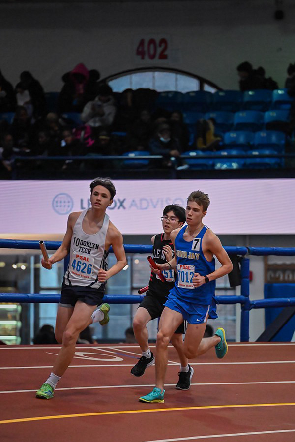

Running: My Favorite Hobby
I joined my school basketball team in sixth grade, and for years it was my main sport. By junior year, the fun was gone. I didn’t like the coach, and didn’t see myself progressing. So I switched to track.
At first I hated it. Laps hurt, and I was slow. But week by week, I got better. My times dropped, workouts that used to wreck me became manageable, and I found that I loved it.
The photo on this page is from my first indoor season. On January 19, 2024, I ran 1000 meters at a PSAL meet in 2:44.59, which is about 66 seconds per lap. A few months earlier, I couldn’t have held that pace for even one lap. Seeing that time was proof that the work was paying off.
Three things keep me running. It’s independent: I don’t need a team, a court, or a coach’s approval. The progress is easy to see: every race and workout gives me a number, and when the numbers drop, I know the work is paying off. And I love how I feel afterward!
Now I train on my own. My next goal is a 5K under 17:30, then under 17 minutes. Here’s what that training looks like.
